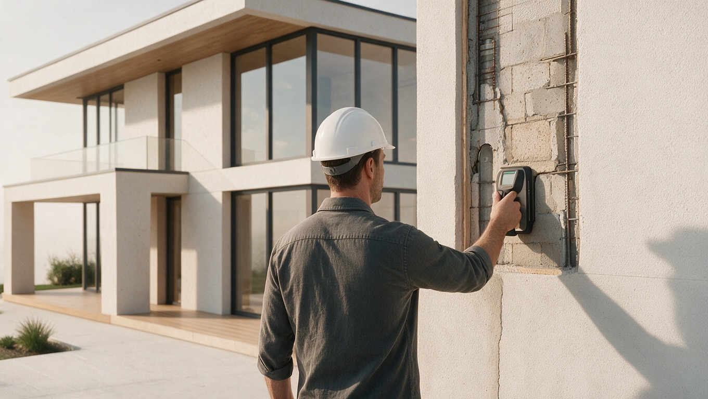

Сравниваем готовый объект и строительство с выбранным застройщиком по бюджету, срокам, состоянию и вашим задачам.
Осматриваем дом или квартиру, фиксируем дефекты и объясняем технические риски до аванса, сделки или приёмки.
Застройщик выполняет работы. Мы контролируем проект, смету, материалы, сроки и ключевые этапы на стороне клиента.
Проводим итоговую техническую проверку, фиксируем замечания и помогаем принять дом или квартиру на основании фактов.
Подобрать решениеМы не продаём строительные работы и материалы. Помогаем проверить застройщика, проект, смету и договор, контролируем ход стройки и принимаем этапы. Отдельно подбираем готовые дома и проверяем дома и квартиры перед покупкой или приёмкой.
Проверим предложение застройщика и будем контролировать проект, смету, материалы, сроки и качество этапов.
Как проходит контроль → 02 / готовые домаНайдём варианты в базе и на рынке, сравним и проверим перед сделкой.
Перейти к домам → 03 / проверкаПроведём технический осмотр перед авансом, сделкой, подписанием акта или продолжением ремонта.
Выбрать тип проверки →Расскажите, что уже есть: участок, проект, предложение застройщика, действующая стройка, найденный дом или квартира на приёмке. Определим риски и предложим понятный следующий шаг.
Оставьте контакты — специалист свяжется в рабочее время, уточнит задачу и предложит следующий шаг.
Застройщик или подрядчик отвечает за выполнение работ. Продавец отвечает за предоставленную информацию об объекте. ВСК-Гарант представляет клиента: проверяет доступные факты, фиксирует риски и помогает принимать решения до оплаты.
Проверяем проект, смету и договор, определяем точки контроля, принимаем доступные этапы и фиксируем отклонения.
Подбираем дома по важным критериям, организуем просмотры, сравниваем состояние и расходы, сопровождаем выбор и сделку.
Проверяем новостройки, вторичные квартиры, частные дома и недострои перед покупкой, приёмкой или продолжением работ.
Наш договор заключается с клиентом на контроль и сопровождение. Мы не продаём материалы и не принимаем работу сами у себя.
Начинаем с предложения застройщика, проекта, сметы, графика и договора, когда условия ещё можно изменить.
Контролируем доступные ключевые и скрытые работы до их закрытия следующими конструкциями и отделкой.
Фиксируем отставание, запрашиваем у застройщика объяснение и план восстановления графика.
Сопоставляем доступные материалы и выполненные объёмы с проектом, сметой и согласованными заменами.
Фотофиксация, перечень замечаний, приоритеты и рекомендации помогают клиенту принимать решения и вести переговоры.
Застройщик отвечает за выполнение работ, разовый специалист оценивает доступное состояние в день выезда. ВСК-Гарант представляет интересы клиента на протяжении согласованных этапов и помогает обнаруживать отклонения до их закрытия.
| Что сравниваем | Застройщик или подрядчик | Разовая приёмка | ВСК-Гарант |
|---|---|---|---|
| Когда подключается | После заключения договора | Перед передачей объекта или покупкой | До выбора застройщика или на текущем этапе стройки |
| Проект, смета, договор | Готовит предложение и выполняет согласованный объём | Обычно не входит в разовый осмотр | Проверяем до подписания и фиксируем вопросы для переговоров |
| Скрытые работы | Выполняет и закрывает следующим этапом | После закрытия часто недоступны | Планируем контрольные точки до закрытия доступных работ |
| Сроки и объёмы | Организует производство работ | Обычно не отслеживает динамику | Сопоставляем план и факт, фиксируем отклонения до оплаты этапа |
| Результат для клиента | Выполненные работы по договору | Перечень дефектов на дату осмотра | История контроля, фотофиксация, замечания и рекомендации по следующим действиям |
Конкретный состав проверки зависит от договора, стадии объекта и доступности конструкций. ВСК-Гарант не подменяет застройщика, проектировщика или судебного эксперта.
Собираем варианты из собственной базы и открытого рынка. Для каждого дома показываем ключевые характеристики, состояние, коммуникации и то, что ещё потребует вложений. Объекты, прошедшие нашу проверку, отмечаем отдельно.
Проверяем квартиры в новостройках и на вторичном рынке, частные дома и недострои. Состав осмотра зависит от объекта: геометрия, отделка, окна, доступные инженерные системы, конструкции дома, участок и документы по согласованной задаче.
Фотофиксация, перечень дефектов, оценка значимости и рекомендации для приёмки, переговоров или решения о покупке. Границы проверки фиксируем до выезда.
Мы не строим дом своими силами. Помогаем клиенту выбрать и контролировать застройщика, проверяем исходные условия, принимаем доступные этапы и фиксируем отклонения до того, как их станет сложно или дорого исправлять.
Проверяем проект, комплектацию, смету, график, порядок платежей и договор.
Определяем точки выезда до закрытия важных и скрытых работ.
Сопоставляем доступные работы, материалы и объёмы с согласованными решениями.
Фиксируем отставание и дефекты, передаём перечень вопросов клиенту и застройщику.
Проверяем доступный результат и незакрытые замечания перед завершением расчётов.
Показываем не только красивые фотографии, но и исходную задачу, ограничения, принятые решения и итог для клиента.
Вы рассказываете, какой дом нужен, где хотите жить, какой бюджет и сроки рассматриваете.
Определяем сценарий: контроль стройки, готовый дом, проверка объекта или сравнение вариантов.
Готовим варианты, предварительный бюджет и перечень вопросов, которые нужно проверить.
Изучаем объект, проект или предложение подрядчика, фиксируем риски и согласуем шаги.
Представляем ваши интересы при взаимодействии с застройщиком, продавцом или подрядчиком в объёме договора.
«Больше всего переживали, что стоимость вырастет в процессе. До подписания помогли разобрать смету и этапы, а во время стройки проверяли объёмы перед оплатой и объясняли замечания».
«Мы живём в другом городе, поэтому важно было видеть процесс удалённо. Каждую неделю получали фото и видео, на вопросы отвечали быстро».
«Понравилось, что не торопили с выбором застройщика. Сначала разобрали смету, материалы и этапы. Было понятно, что и когда проверять до следующей оплаты».
Отзывы по подбору готовых домов и технической проверке добавим по мере накопления — только реальные, с разрешением на публикацию.
Выберите задачу. Предложим следующий шаг без навязывания.